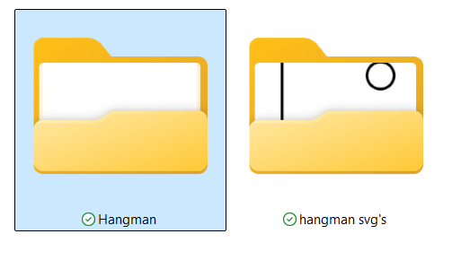
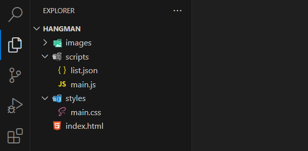
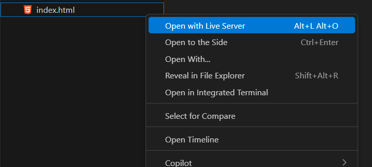

Stap 1 - Mappen en bestanden
SVG (Scalable Vector Graphics) is een vectorafbeeldingsformaat dat wordt gebruikt voor het weergeven van tweedimensionale vectorafbeeldingen. SVG-bestanden zijn schaalbaar, ze kunnen worden vergroot of verkleind zonder kwaliteitsverlies.
- 1.1 Download hier alle hangman svg's
- 1.2 Maak een nieuwe map aan en geef als naam hangman

- 1.3 Open het programma Visual Studio Code en open de folder die je zonet hebt gemaakt
- 1.4 Maak de volgende folderstructuur

- 1.5 Pak het zip bestand uit en sleep de hangman svg's naar de images map

- 1.6 Installeer de liveserver extensie zodat je html files kunt bekijken in de browser
Als liveserver niet gebruikt wordt, kan dit later voor problemen veroorzaken!
- 1.7 Druk met een rechter muisklik op de index.html en druk op "Open with Live Server". Zo wordt je standaard browser gestart en zal je een blanco pagina zien verschijnen!
